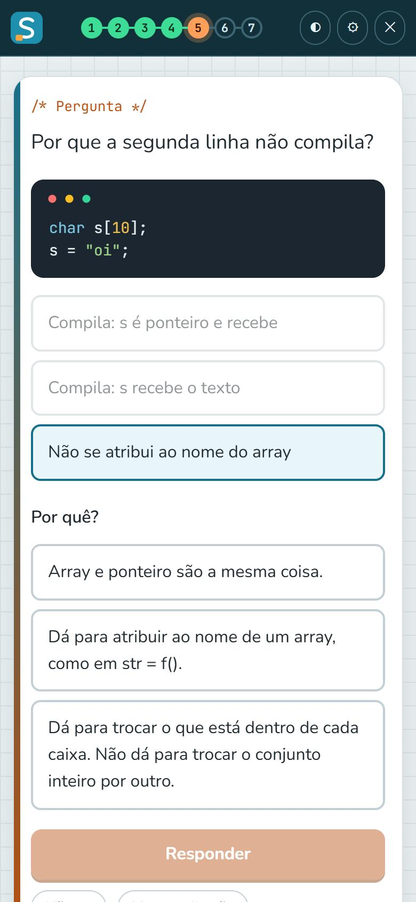
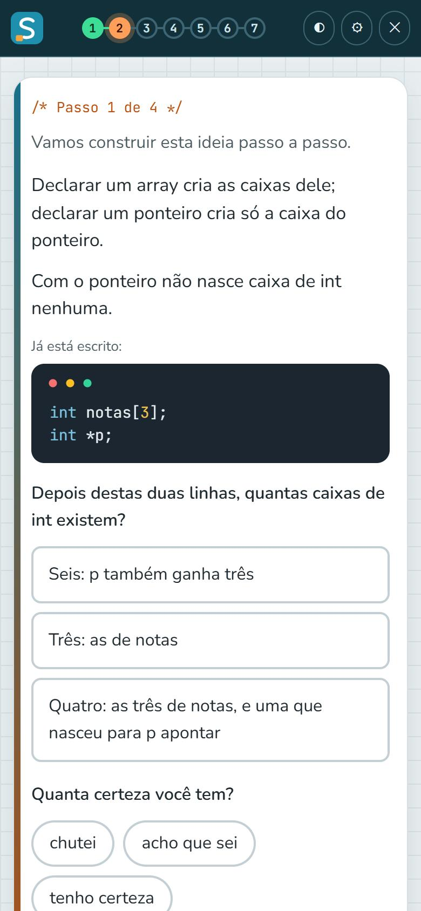
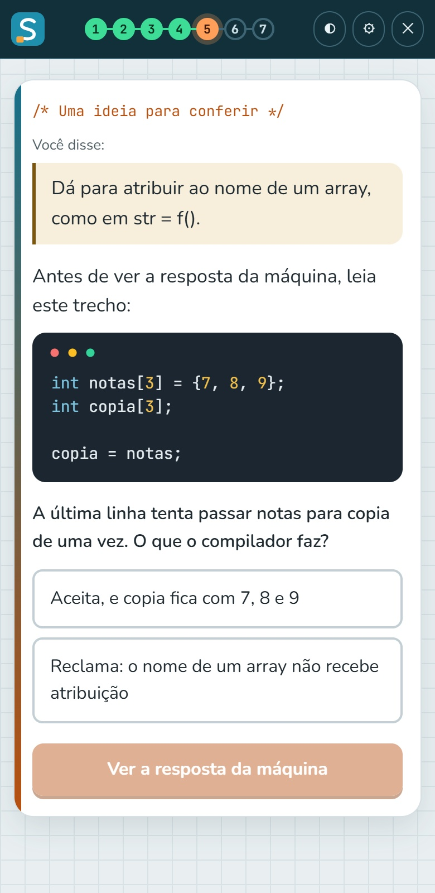
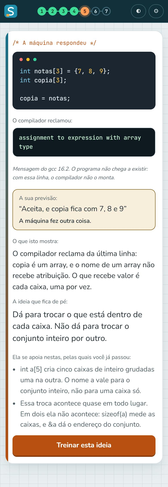
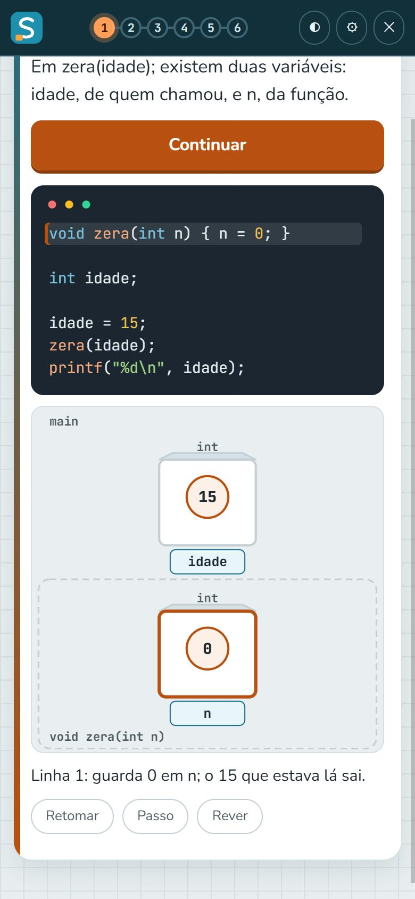
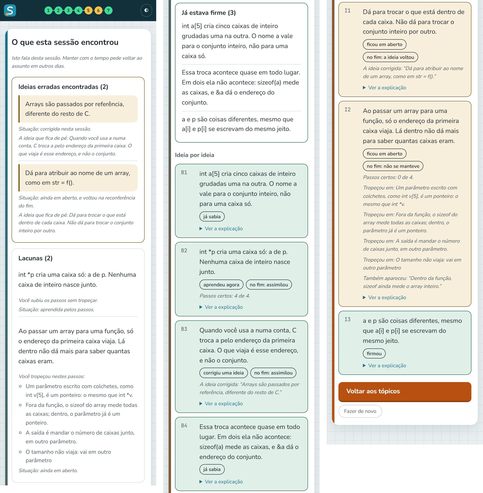

“Ponteiros são um conteúdo de difícil aprendizagem para iniciantes em programação na linguagem C”Yamashita et al. (2017, p. 1)
“é possível construir um sistema que formule hipóteses diagnósticas de concepções errôneas sobre ponteiros em C a partir da resposta, da razão e da certeza declarada, e que as confronte com demonstrações verificadas por compilador, de modo que o conteúdo e o comportamento do sistema possam ser conferidos sem depender do julgamento de quem os elaborou?”
Escopo. “O trabalho não avalia o sistema com estudantes.” A questão é de construção e de verificação; o estudo com participantes é o primeiro trabalho futuro.
Geral: desenvolver e verificar um sistema que, em 13 tópicos de ponteiros em C, formule para cada premissa uma hipótese diagnóstica sobre o estudante e conduza cada caso por um percurso próprio.
A concepção errônea resiste à explicação: Posner et al. (1982).
A certeza como sinal, e não como pontuação: Gardner-Medwin (2006).
Componentes de conhecimento (VanLehn, 2006) e espaços de conhecimento (Falmagne et al., 2006).
A demonstração confronta a previsão da própria pessoa: White e Gunstone (1992).
Passos curtos, uma ideia nova por passo: Sweller, Van Merriënboer e Paas (2019).
Tutor por passo (VanLehn, 2011); desempenho não é aprendizagem (Soderstrom; Bjork, 2015).
| Trabalho | Domínio | Diagnóstico de concepção errônea | Intervenção conforme o diagnóstico | Visualização da execução |
|---|---|---|---|---|
| TEDViT | ponteiros em C | não | não | sim: memória e mundo do domínio |
| Iltis | métodos formais | mede e descobre, nos dados agregados | proposta (retorno sob medida), não aplicada no estudo | não |
| ALEKS | matemática | não: avalia o que se sabe e o que falta | indica o que aprender em seguida | não |
| máquinas nocionais | programação introdutória | não se aplica: é uma revisão | não se aplica | recomenda ensinar a máquina nocional |
| Structura | ponteiros em C | sim: resposta, razão e certeza, por premissa | sim: escada, demonstração ou revisão | sim: as cenas da revisão |
| Tópico | Título | Premissas |
|---|---|---|
| kc_00 | Declaração de variáveis | 5 |
| kc_01 | Modelo de memória | 5 |
| kc_02 | O que é um ponteiro | 6 |
| kc_03 | Declaração e inicialização | 6 |
| kc_04 | Derreferência: & e * | 6 |
| kc_05 | Ponteiro NULL | 6 |
| kc_06 | Passagem por referência | 6 |
| Tópico | Título | Premissas |
|---|---|---|
| kc_07 | Ponteiro e array | 7 |
| kc_08 | Alocação dinâmica | 6 |
| kc_09 | free() e ponteiro pendente | 8 |
| kc_10 | Ponteiro para ponteiro | 6 |
| kc_11 | Aritmética de ponteiros | 6 |
| kc_12 | Ponteiro pendente por escopo | 6 |

1. A resposta — a alternativa escolhida.
2. A razão — a ideia que sustenta a resposta; cada razão incorreta aponta uma concepção do catálogo.
3. A certeza — “chutei”, “acho que sei” ou “tenho certeza”.
“A situação atribuída a cada resposta é uma hipótese diagnóstica”.
| Resposta, razão e certeza | Situação | Caminho |
|---|---|---|
| resposta correta, razão correta e “tenho certeza” | sabe | firme |
| resposta e razão corretas sem certeza, resposta correta pela razão incorreta ou resposta incorreta pela razão correta | acerto sem firmeza ou sinais divergentes | reforço |
| “Não sei”, ou resposta e razão incorretas com “chutei” | não sabe | lacuna |
| resposta incorreta, pela razão de uma concepção errônea, com alguma certeza | sustenta uma concepção errônea | crença |
Cada premissa recebe no máximo uma intervenção de cada tipo, e o limite de oito telas por premissa limita a extensão da sessão.

“Os passos guiados contêm uma ou duas frases curtas e um exercício breve; os passos de prática contêm apenas o exercício.”
| Forma | Passos |
|---|---|
| escolher | 190 |
| digitar | 140 |
| montar | 37 |
| completar | 30 |
| tocar | 5 |
402 passos (244 guiados e 158 de prática), cada um com duas versões.

“Você disse”: a concepção da pessoa e a previsão solicitada.

“A máquina respondeu”: a mensagem do compilador ou a saída do programa.
80 demonstrações: 41 mostram a saída e 39 a mensagem do compilador, todas conferidas antes de entrar no sistema.

A caixa é a variável; o bilhete, o ponteiro; a fileira, o array; a bancada, a função em execução; o bloco alugado, a memória do malloc.
A cena avança “a pouco mais de um segundo por passo”, com Pausar, Passo e Rever.
“São 79 cenas, uma por premissa.” Cada estado do palco é conferido contra o programa instrumentado.

Ao final do tópico, cada premissa trabalhada é reconferida, depois de a pessoa ter respondido a outras premissas.
“Esse intervalo permite distinguir a assimilação na sessão do acerto obtido logo após a leitura.”
O fechamento “resume a sessão em até quatro blocos”.
Classe 1 — literatura (22). Principalmente o Apêndice A de Sorva (2012), que reúne 162 concepções da literatura de programação introdutória.
Classe 2 — corpus de praticante (35). As perguntas do FAQ do comp.lang.c (Summit, c2005) e, em uma concepção, só normas (CERT C e CWE).
Graus: D 6, L 33, T 15, N 3, E 4.
Documentos de projeto e testes escritos antes do código.
gcc 16.2: o conferidor compila e, quando preciso, executa o código das demonstrações, das cenas e dos passos cuja resposta é código.
As regras decidíveis por programa viraram testes, em todos os tópicos.
Dez perfis de regras fixas, determinísticos: não são modelos de linguagem.
Contraste da WCAG 2.1 nos dois temas, nenhum recurso externo.
Sessões de ensaio e revisão da clareza das perguntas.
“O resultado mais relevante da verificação não é a ausência de problemas na versão descrita, mas o conjunto de defeitos identificados ao longo do processo.”
Estudo com estudantes, conforme o protocolo do Apêndice A: de 10 a 15 participantes, com verbalização do pensamento em voz alta, para quatro questões (V1 a V4).
“Nos limites do que foi realizado, a resposta é afirmativa quanto ao que o compilador e os testes alcançam”
Código e conteúdo: github.com/RflHrq/Stuctura — a versão descrita na monografia está registrada no commit e57385b.
Uso de IA: Claude Code, da Anthropic, sob a direção do autor, a quem couberam as decisões de escopo, de projeto e de método. O que se afirma sobre os programas foi conferido por compilador no que ele alcança, e nenhuma obra foi citada de memória.